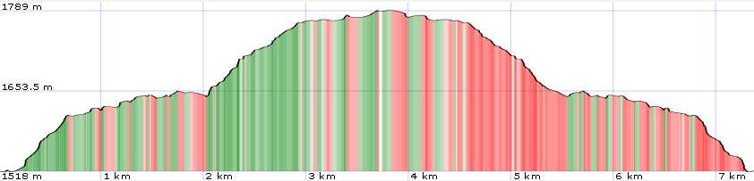
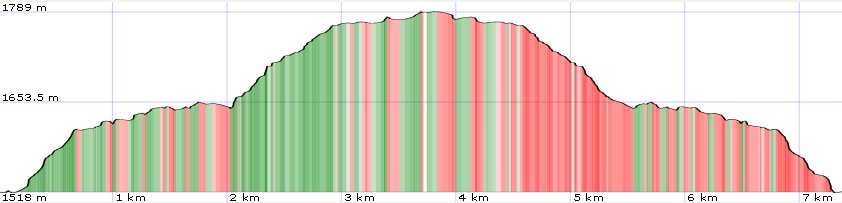

General Information
Map

| data fields | Note |
|---|---|
| number | 006 |
| suitable for |
|
| degree of difficulty |
|
| distance | 7 km |
| hiking time | 2h |
| difference in altitude | 300 mt D+ and 300 mt D- |
| recommended period |
|
| Road surface | dirt road, path |
| additional notes | Lago Scaffaiolo is located in a stretch of ridge often characterized by fog or strong winds. It is advisable to inquire before leaving and ALWAYS have the right equipment with you. |

